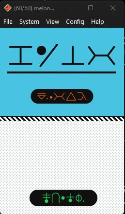
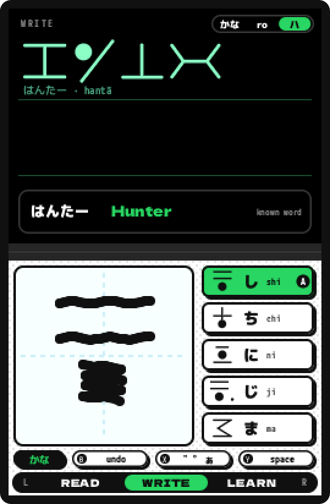
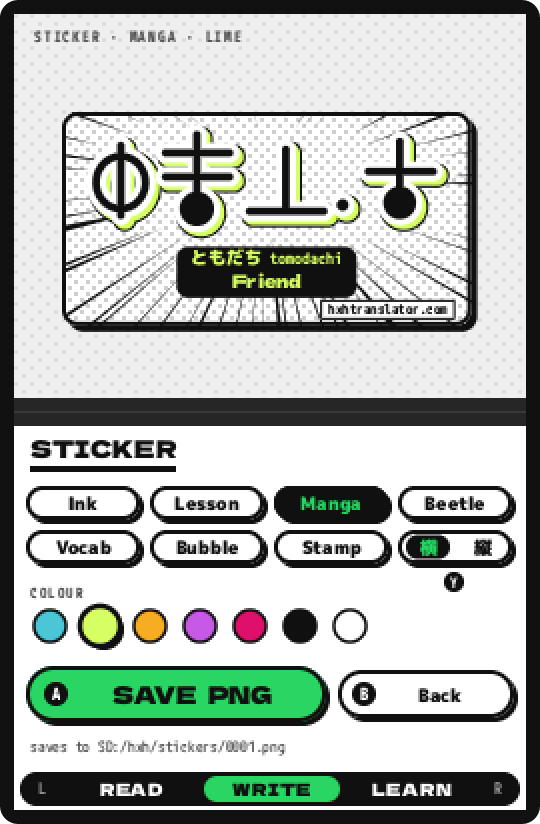
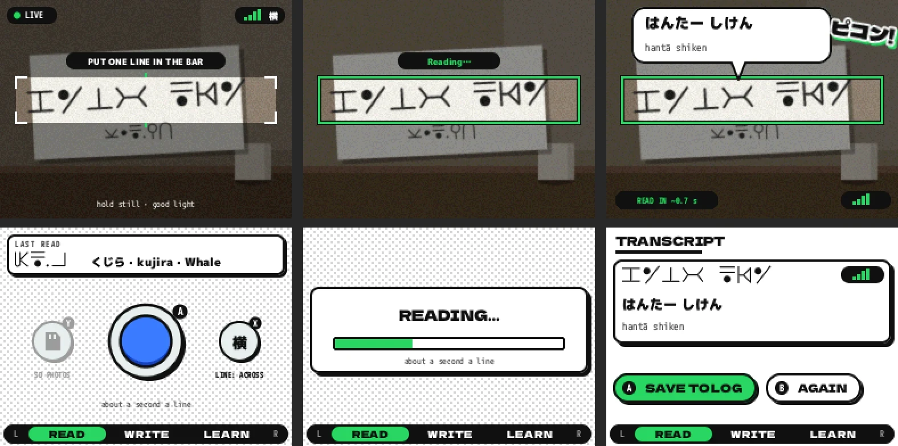

Project · HxH Translator for DSi
Reading Hunter × Hunter script on a Nintendo DSi
The HxH Translator's three modes, Read, Write and Learn, rebuilt for a handheld from 2008: a Rust app on a 133 MHz ARM9, a 3D beetle drawn by the console's own toon hardware, and a 100 KB int8 reader that does a fifth of the web reader's arithmetic and reads a line through the DSi's camera.
Status, November 26, 2026. The app runs on a real DSi and has passed the owner's tests there, but it is not released yet. Its source code is not published. Its reader model, dsi_v1, is on Hugging Face with the other models.
 Home, lid shut
Home, lid shut Opened: pick a mode
Opened: pick a mode Read: one line
Read: one lineThe HxH Translator is a web app with three modes: Read points a phone's camera at Hunter script and turns it into kana and Latin letters, Write turns what you type into Hunter script, and Learn teaches the alphabet. This post is about putting all three on a Nintendo DSi, a handheld from 2008 with two small screens, a stylus, a camera and a 133 MHz processor. The hardest part was Read: a PC reads a line in about a millisecond, and the DS, in an emulator, took eleven seconds. It took a reader that does a fifth of the arithmetic, and hand-written ARM kernels, to bring that down.
A beetle that opens with the lid
The web app's mascot is a beetle whose wings open to show a screen. The DSi is a clamshell, so the idea wrote itself: opening the console opens the beetle. The top screen is the beetle's screen; the bottom touch screen is the panel with the buttons. The three modes stay as they are on the web.
Before any code, the screens were drawn as a page of twelve mockups, each a real 256 × 192 canvas scaled only by whole numbers so every DS pixel shows. Nothing on that page was retyped: it imported the web app's own glyph renderer, beetle model, Learn data and romaji converter. Drawing them settled a few things early. The Hunter Exam's four answers sit where the Y, X, B and A buttons are, so the stylus is optional. Learn's example glyph is く, not ね, because ね is a single closed stroke in Hunter script and can't show stroke order; く has three.
What the hardware offers decided most of the rest:
The toon shading was a gift: the web draws the beetle with flat bands of colour and an ink outline, and the DS's 3D chip does exactly that in hardware. The processor was the problem. The web's Fast reader takes 154 million multiply-adds (MACs) to read one line. At a guessed 30–60 million a second, that is 2.6–5 seconds a line, and the line finder that finds text on a whole page would take most of a minute. So the DSi's Read does not look for lines. You aim one line into a guide bar, and only that line is read.
C for the hardware, Rust for the rest
DS homebrew is mostly written in C; this app uses BlocksDS, a free toolchain and set of libraries. Rust can target the DS's processor too (thumbv5te-none-eabi, a nightly-only target), and the project's int8 engine was already written in Rust without the standard library. So the app is split: a thin C layer owns the hardware, and Rust does everything else.
C · BlocksDS
owns the hardware
- waits for each screen refresh and copies the rows Rust changed
- 3D: the beetle's display lists, toon table and outlines
- sound, through maxmod
- the cameras, the SD card and the files inside the ROM
- the lid, sleep and the clock
Rust · no_std
everything else
- every scene: home, Read, Write, Learn
- draws both screens into 16-bit pictures, with its own font renderer
- Hunter glyph layout and the kana rules
- Learn's similarity, exams and puzzles
- the int8 reader, with ARM9 kernels in fast on-chip memory
The Rust side is ports of the web app's JavaScript: the kana converter, the Hunter glyph layout, Learn's similarity measure and puzzles. A port can drift from the original in small ways, so every port is tested against the web app's own code. Node scripts run the JavaScript and save its answers, and the Rust tests must match them:
- the kana converter: 0 mismatches over 5,437 distinct inputs and 10,769 conversion cases;
- the glyph layout: within 0.0001 of the font size in 120 cases, and text widths within 0.1 px of what Chrome measures;
- Learn's similarity: all 3,403 pairs of chart kana within 0.00000054 of the font size, the same 200 lookalike lists, 15 seeded exams and 440 days of daily puzzles.
The similarity port needed a second try. Its first version used rounded fixed-point coordinates, and 5 of the 200 lookalike lists came out in a different order. The JavaScript has exact ties (は, ば and ぱ are the same shape apart from their marks) and gaps as small as 0.0000046, so rounding was enough to swap neighbours. Integer coordinates with more bits, taken straight from the glyph data, fixed it.
The tests also found two bugs in the web app itself. Typing the name “Reā” made Write show リーundefined, and the word “constructor” was looked up as JavaScript's own Object function, so the bar showed function Object() { [native code] }. Both are now fixed in the web app's code too.
Six tracks at once
Once the skeleton drew Hunter text in an emulator (melonDS), the work was split into six tracks that ran at the same time, each in its own AI coding session with its own files, and reported back to a coordinating session that merged them, kept the journal and did the checks in the emulator. All six finished in about an hour.
| track | what it built | the number that mattered |
|---|---|---|
| A text | Three free fonts (Dela Gothic One, M PLUS 1p, M PLUS 1 Code) baked into 46 bitmap fonts with kerning; 482 interface strings in English and Japanese. | A frame of handwriting went from 72.8 µs to 1.0 µs on the PC by redrawing only the box that changed (a median of 77 pixels instead of 49,152). |
| B beetle | The web's beetle exported from its own code, cut down, and baked into DS display lists with a toon table and outlines. | 25,736 triangles down to 1,484; about 800 polygons a frame of the 2,048 allowed. |
| C Write | The kana converter and the 12-key multi-tap pad, with the web's timings. | 0 mismatches over 5,437 inputs; two web bugs found. |
| D Learn | The chart, its 200 example words, 42 puzzles, the similarity measure, and a new score for tracing with the stylus. | Perfect tracings earn 3 stamps for all 83 kana; no lookalike earns 2 or more. |
| E Read | The int8 engine built for the DS, plus a hand-written ARM9 kernel for its most common layer. | Bit-exact with the PC on about 3,200 random layers and 24 reference outputs. |
| F sound | The web's 13 sound effects and 12 keypad tones, converted for the DS's mixer. | Each keypad tone within 2 Hz of the web's; 478 KB of sound. |

The first ROM The 3D beetle, opened
The 3D beetle, openedWhat the emulator didn't show
melonDS is a very good emulator, but it draws each 3D frame in one go. A real DS draws its 3D picture line by line while the screen is being shown, with a small buffer of finished lines. The first time the app ran on the owner's DSi, the beetle had holes: rows of white dots across its shell, and a shredded screen when it opened. None of it had ever appeared in the emulator.
The white was the picture behind the beetle showing through, so the beetle's own pixels weren't being drawn on those lines. The holes sat in rows where many layers pile up, such as the eye lenses over the shell. The app had a debug overlay, so the next ROM added four test modes that switch features off. The owner tried each one on the DSi:
| T0, as designed | T1, no outlines | T2, no rear-plane bitmap | T3, neither | |
|---|---|---|---|---|
| home, closed | holes | holes | whole | whole |
| opened | holes | holes | whole | whole |
The culprit was the rear-plane bitmap, a DS feature that puts a picture behind the 3D scene. It makes the 3D chip read a colour and a depth value for every pixel behind the beetle, and on crowded lines that extra reading made it run out of time. The outlines cost nothing visible. The fix moved the picture behind the beetle out of the 3D chip altogether, onto an ordinary 2D layer:
First build
holes on crowded lines
Fixed
whole on the DSi
The next hardware test found one more: the whole screen blinked white for a frame whenever a word appeared or the beetle opened or closed. To keep old words from leaving a ghost behind the beetle, every change first sent the background alone and the full picture a frame later, and in between the screen showed only the white paper. In the emulator it was a barely visible flicker. The fix is a new command: a scene hands over the picture that belongs behind the beetle, and both layers change in the same screen refresh. The owner's verdict on the next build: “Working great”.
Fitting in 4 MB
The DSi has 16 MB, but the same ROM also runs on an original DS, which has 4. At first everything lived in the program's memory image: the fonts alone were 1.3 MB, the sounds half a megabyte, and the reader models and their test strips another 0.7 MB. Switching from one reader to the other in original-DS mode showed “NO MEMORY: THE READER NEEDS 360K”. A clean message rather than a crash, because the reader asks for its memory in a way that can fail, but a sign of things to come.
The fix was to move the fonts, strings, sounds and models into the ROM's own file system (NitroFS) and load them when a scene needs them: a font when it is first drawn with, one language's strings at a time, a sound on first play, one reader at a time. Each scene is built when you enter it, and after its first frame everything it didn't use is freed.
| before | after | |
|---|---|---|
| read-only data in memory | 2,676,824 B | 180,992 B |
| the whole resident image | 3,196,500 B | 938,188 B |
| free memory at start | 473,516 B | 2,731,828 B |
| free in each scene, measured in melonDS | ||
| home | – | 2,719 KB |
| Write, after typing ともだち | – | 2,428 KB |
| Learn, the chart | – | 2,661 KB |
In every scene the largest free block equalled the free total, so memory was not fragmenting.
Write: a flip phone, a keyboard and a pen
Write works like an old flip phone: tap a key once for あ, twice for い. The top screen writes each Hunter glyph stroke by stroke as you type, and a meaning card shows known words, such as ともだち, “friend”. A QWERTY keyboard handles romaji and names. Anything you write can become a sticker in seven styles, saved as a PNG to the SD card by a small PNG writer written for the DS.
After using it, the owner asked for handwriting. You draw a Hunter letter with the stylus, and its kana goes into the text. The pen compares your drawing with 79 templates, every glyph and form with its marks, after every stroke, using the same kind of distance between drawings that Learn uses to find lookalikes. On 3,160 test drawings made from the glyphs' own strokes, the right kana was the top guess 98.9% of the time for neat drawings and 94.3% for sloppy ones, and among the five guesses shown 99.2% of the time or more. A reading takes an estimated 18 ms on an original DS. Real handwriting has only been tried by hand, not measured.
 The pad
The pad
The pen
Stickers My License
My LicenseLearn: trace, exam, puzzles
On a phone, “trace it with your finger” was always a feature for later. With a stylus it became the centre of Learn. Trace it shows a ghost glyph with numbered strokes; you trace it, and each stroke is scored by how far it strays from the glyph's own stroke, on average and at its ends. Three stamps need an error of 3.2% of the font size or less; a lookalike drawn perfectly never earns more than one. The Hunter Exam asks in three phases (a glyph to its kana, a kana to its glyph, a whole word), with wrong answers picked from the glyph's real lookalikes, and passing it earns the license above.
Today's puzzle gives one word a day to decode a glyph at a time. Puzzle Run came later, at the owner's request: words keep coming until three answers are wrong, and the game gets harder as you go.
| words solved | level | word length | wrong answers | romaji shown | clock a glyph |
|---|---|---|---|---|---|
| 0–2 | 1 | 1–2 | nothing alike | yes | none |
| 3–5 | 2 | 2–3 | a little alike | yes | none |
| 6–9 | 3 | 2–3 | closer | yes | none |
| 10–14 | 4 | 3–4 | the closest ten | no | none |
| 15 on | 5+ | 3–5 | the closest six | no | 10 s, then ½ s less a word, down to 4 s |
 The chart
The chart Trace it
Trace it The exam
The exam Puzzle Run
Puzzle RunReading on a 133 MHz ARM9
The reader is a small convolutional neural network (the How it works article shows how it reads a line). Its numbers are stored as int8, one byte each, and the project's engine runs it with whole-number maths only. That engine was written in Rust without the standard library for an ESP32 microcontroller, so it compiled for the DS unchanged. The question was speed.
The DS's ARM9 has no instructions that multiply many small numbers at once, which is how phones and PCs run networks quickly. It does have SMLAxy, which multiplies two 16-bit halves of registers and adds the result in one go. Track E wrote a kernel around it for the 1×1 convolution, the layer that does most of the reader's work: it computes 2 outputs × 4 channels at a time, is 508 bytes long, and lives in the ARM9's small on-chip instruction memory, where it runs without waiting for main memory. Every result must be bit-exact: the same bytes as the PC, down to the last digit of every score.
The first try in the emulator never finished a read. The screen showed READING for five minutes. The cause wasn't slowness: a tool that measures how much stack the reader uses works by filling unused stack with a pattern, and after the compiler inlined it, it painted over its caller's own live variables. The next pointer the reader used was the pattern 0xA5C35A3C, the processor faulted, and with no fault handler the screen just froze. PC tests couldn't see it, because the painter does nothing off the DS. With that fixed, the reader ran, and matched the PC exactly: 17,472 of 17,472 output scores.
The kernel made the web's Fast reader 2.7 times faster, but 11 seconds a line is still far too slow. A faster kernel can only do so much; the reader itself had to shrink.
dsi_v1: a fifth of the arithmetic
Track E priced several smaller readers with a cost model built from the kernel's measured speed, and recommended the cheapest one with a track record: the first three stages of the same MobileNetV4 network (the full reader has four), at 32 pixels tall instead of 48. The project had trained this shape twice before. This time it was trained on the v6 data, so it also reads digits and some punctuation, then fine-tuned for int8 and converted through the same chain as the web's readers, which checks it bit for bit against Espressif's int8 simulator.
| Fast, on the web | dsi_v1 | |
|---|---|---|
| network | MobileNetV4-small, 4 stages | first 3 stages |
| input line | 48 × 768 px | 32 × 512 px |
| parameters | 323,995 | 96,923 |
| multiply-adds a line | 154.19 M | 30.62 M |
| model file, int8 | 339,552 B | 103,856 B |
| working memory | 368,640 B | 163,840 B |
| a line on a PC, WebAssembly | 5.96 ms | 1.24 ms |
Training took about 30 minutes on one RTX 4080 SUPER: two fine-tuning stages (12,000 and 3,000 steps) and 4,000 steps of quantisation-aware training. The int8 model matches Espressif's simulator on 512 of 512 test lines in every build of the engine, the DS's included.
Most of its extra mistakes are the small marks. At 32 pixels tall, the dot that turns か into が is a few pixels across, so が → か and ぱ → ば are its typical errors, along with missed spaces between words. On the console, the trade is worth it:

The speed test's breakdown by layer showed the next target. The 1×1 convolutions ran at 3.7 processor cycles a multiply-add and the larger ones at 4.2, but the depthwise convolutions, which had no kernel yet, took 18.8 cycles each and a quarter of the time. A second kernel reads four channels in one 32-bit load and splits them into 16-bit halves with two masks, with no unpacking: 12 instructions for 4 multiply-adds, about 3.5 cycles each by count. It passed 5,000 random layers with no mismatch.
One more change keeps the screen alive while it reads. A whole read in one go would freeze the app for a second or two, so the reader now runs in small bands of about half a million multiply-adds and stops after about 12 ms each frame. The DSi reader is 86 bands; the progress bar fills as they finish.
Read with the camera
The DSi's camera gives the reader its input almost for free. A full photo comes as brightness plus colour, and the brightness part is exactly the grey picture the reader wants. The camera driver streams a live preview into three buffers in main memory, so the camera never waits for the app, and takes 640 × 480 stills on demand. It uses 888 KB while it is on, and nothing when it is off.

- Aim. The preview is dimmed outside the guide bar. Every sixth frame a quick check inside the bar moves the signal bars and the tip (“Get closer”, “More light”).
- Press A. The app takes a still and cuts the bar out of it. The cut is shrunk and padded to 32 × 512 exactly as the web app prepares a line: a test runs the web's own JavaScript in Node and gets the same bytes.
- Read. The camera turns off, so the reader has the processor and memory to itself, and the reader runs in its bands: about 37 frames on the progress bar.
- The result. A speech bubble with the kana, the romaji and a meaning when the word is known. Kana the reader is less than 60% sure of are underlined; tap one to see its runner-up. SAVE TO LOG adds the line to a text file on the SD card.
Lines written top to bottom needed one more trick, because there is no small vertical reader. The app cuts a column into glyphs by where the ink is and sets them upright side by side, and then the across reader reads them.
Writing the driver turned up a few surprises in the DS library: it numbers the cameras the other way round (the outer one is 1), it mirrors the outer camera, and if the camera sensor never answers, the DS's second processor waits forever where nothing on the main processor can catch it.
The emulator can't test any of this: it isn't known to emulate the DSi's cameras. So the first time the camera code ran on anything but a PC was on the owner's DSi. The report back: “It all works.” The preview, the still, the light going off, reading lines across and down, and the log on the SD card.
Where it stands
Everything above happened on one day, November 26, 2026, from the first feature list to a ROM the owner tested on a DSi. The final ROM is 3.8 MB, version 0.1.0, and runs the whole app: the beetle, Read, Write with the pen, Learn with Puzzle Run, and saving to the SD card.
- Not released yet. A release page is being prepared. It will be linked here when it is public.
- The speed on a DSi hasn't been written down. The overlay shows it, but the tests so far were about whether things work. The cost model says about 0.6–0.7 s a line in DSi mode; the emulator measured 2.38 s at the original DS's half clock, before the depthwise kernel.
- Reading photos from the SD card is planned and greyed out for now. It would use the line finder as a slow background job.
- Not yet tested on an original DS (where Read is greyed out, since there is no camera) or a 3DS.
- Every accuracy number here is on generated pictures. The pen and Trace it's stamps are tuned on synthetic drawings, not real handwriting.
Words to know
- ROM
- The file that holds a DS program and its data. Homebrew ROMs run from an SD card through a menu such as TWiLight Menu++.
- Homebrew
- Programs for a games console made by its users, not its maker.
- melonDS
- A DS and DSi emulator for the PC. Good for testing, but its timing isn't exact, and it draws 3D differently from the real chip.
- ARM9
- The DS's main processor. A second, slower one (the ARM7) handles sound, touch and Wi-Fi.
- MAC
- One multiply-add, the basic step of a neural network. The DSi reader needs 30.6 million for one line.
- int8
- Storing each of a network's numbers in one byte and doing the maths with whole numbers.
- Kernel
- A small, hand-tuned piece of code for one kind of layer, written for one processor.
- Bit-exact
- Giving exactly the same bytes as a reference, not just nearly the same numbers.
- NitroFS
- A file system inside the ROM, so data can be loaded when it is needed instead of all at start.
More
The reader on the DSi is a smaller member of the same family as the web's readers. How those are trained, quantised and checked is in the deep dive; the DSi model itself is on Hugging Face.